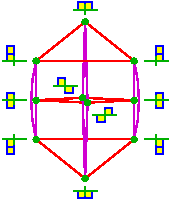

The equivariant cohomology rings of quot schemesT. Braden, Linda Chen, and F. Sottile.We give a presentation for the (integral) torus-equivariant Chow ring of the quot scheme, a smooth compactification of the space of rational curves of degree $d$ in the Grassmannian. For this presentation, we refine Evain's extension of the method of Goresky, Kottwitz, and MacPherson to express the torus-equivariant Chow ring in terms of the torus-fixed points and explicit relations coming from the geometry of families of torus-invariant curves. As part of this calculation, we give a complete description of the torus-invariant curves on the quot scheme and show that each family is a product of projective spaces. |  |